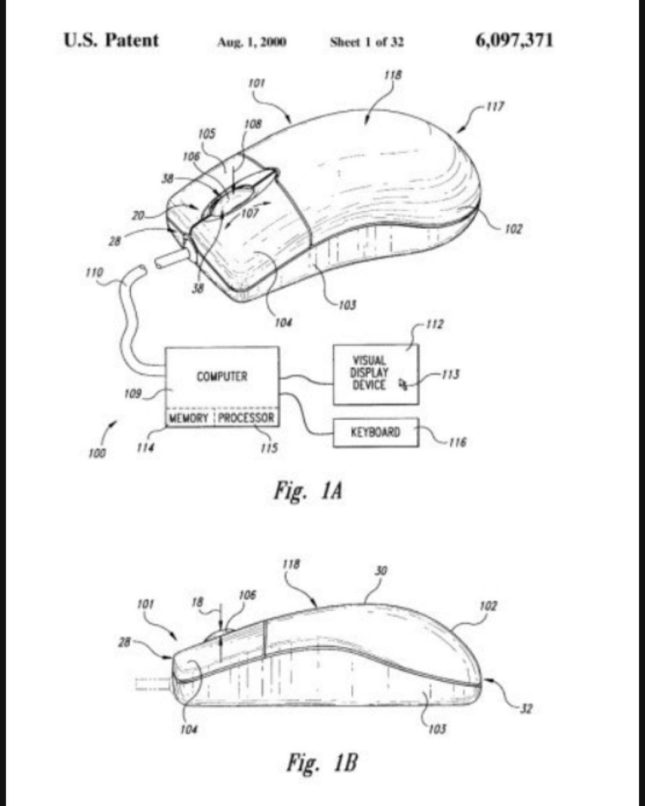
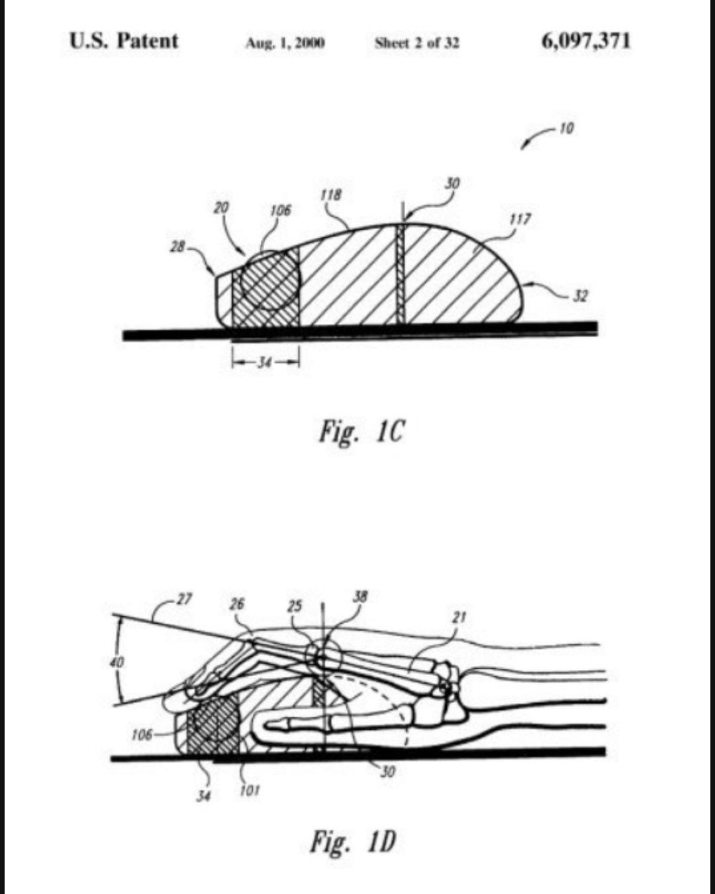
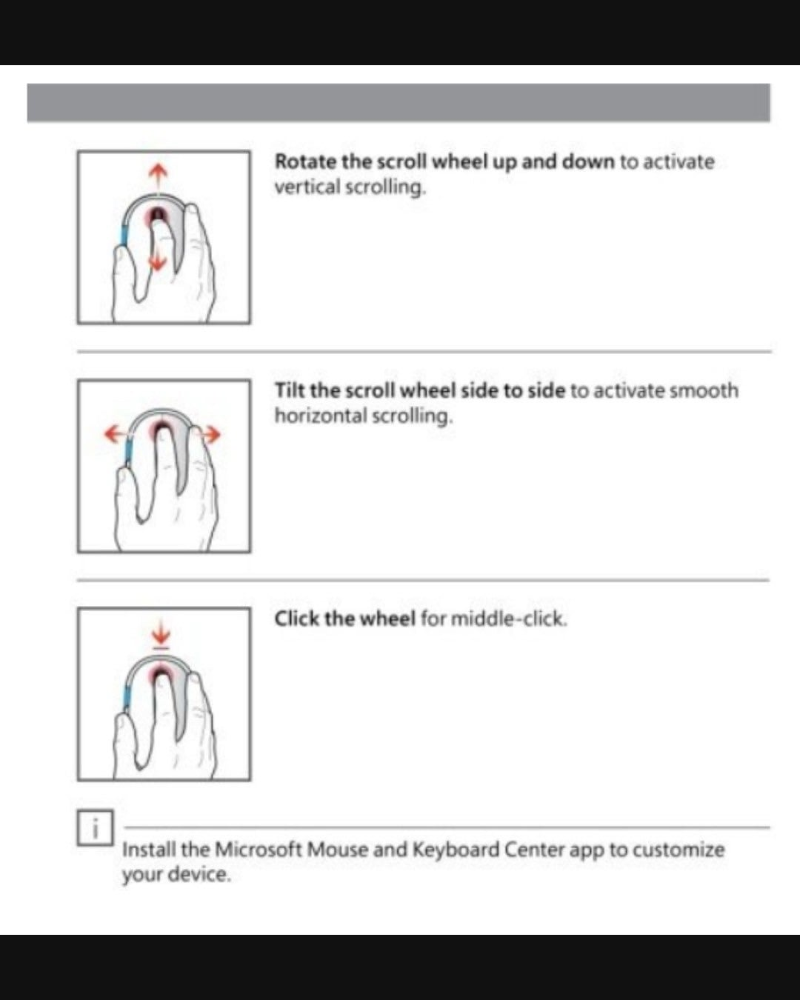

검지가 정답이래



검지가 정답이래
양발운전은 지장이 있잖아 비유대상에 맞지않음
아니 wwe맞지?? 진지충될까 무섭네 ㅋㅋㅋ 개드립할때도 검지로 클릭 휠 다 한다고??
나도ㅋㅋㅋ 휠, 좌클릭 둘다 우클릭보다 사용 빈도가 높은데 아무리 작은 행동이라해도 굳이 검지로 와리가리한다는게 이해가 안가네
중지충이면 양발운전일 확률 높을려나?
양발운전 비유는 잘못된거
양발운전이 안 좋은 이유가 마우스에선 해당되는 사항이 아님.. 힘조절 필요 없음, 같이 눌러도 상관 없고 오히려 일부 환경에선 같이 눌러야할 필요가 있음 등
아니시발 중지로한다고 사고나고 사람 안죽는다고
난 중지가 더 편한데 중지도 여전히 불편해서 휠만 쓰고 클릭은 안쓰게되던데
논문이 뭘알아!
손가락 아프면 번갈아가며서 쓰는중인데
댓글에 자기의견이랑 다르면 욕부터 박네 ㅋㅋㅋ
fps에서 휠클릭으로 무기모드변경이나 핑찍거나 점프할거면 중지써야됨 ㅋㅋ
논문 권위를 이용해서 타인을
공격하고 싶은 커뮤중독들이 많긴한데
일단 꿈 깨시고 아무리 인체공학적으로 설계해야
인간은 걍 그거 ㅈ까잡수십쇼 하면서
더 편한 자세를 추구해버림 그게 인간임
인체공학 책상에 다리올리기 쌉꿀잼
손가락이 여러갠데 왜 스왑을 하지
젓가락질이나 제대로 해라
병신들 그립과 마우스 사이즈에 따라 다른거다 ㅋㅋㅋㅋㅋㅋ
팜그립 마우스는 대부분 크고, 유저가 대형패드에 감도 낮춰 쓰니까 중지로 돌리는게 편하고 클로는 마우스가 작고 약지가 구부러져서 쉘외곽에 걸쳐있으니까 중지가 휠에 잘 안닿아서 검지로 돌리는게 편함.
초기는 초기고 아무튼 검중약으로 하게 새로 디자인하면 좋은거잖아
다들 그냥 손놓고 검지를 들어보고 중지를 위로 들어보면 알 수 있다
검지가 더 높이 올라가고 다른손가락에 영향이 적다 힘이 덜들어간다
중지를 들어올리면 높이 올라가지도 않고 검지에 조금 그리고 약지에 힘이 많이들어간다
그냥 신체 특성상 검지가 편하다
혹시 약지로 휠돌리는 사람도 있나? 말리지는 않는다
그냥 지 편한데로 하셈
양발운전처럼 안전에 문제 생기는것도 아니고
우클릭을 그럼 약지로만해? 약지안아픔?ㄷㄷ
버티컬쓰고 검지로함
중지로하는대
엄지에 휠씀
버니합하면서 공격할라면 중지
200 300만원짜리 폰으로 갤럭시니 아이폰이니 하는것도 ㅂㅅ같은데 마우스휠 검지 중지로도 지랄나는 애들이 있네
본능적으로 그냥 중지로 쓰게되던데 특히 게이밍할때 검지로 쓴다는건 ㅈㄴ 신기하다 손해보는구조같은데
에펙 탭스떄문에 휠설정해두고 중지쓰긴 하긴하는데 솔직히 손목 조금이라도 오래 쓰려면 검지가 맞긴해
손에 무리 많이 가고 심해지면 어꺠까지 올라올꺼임
자기 좆대로 쓰는거지 뭘 ㅋㅋㅋㅋㅋ 나야 검지로 쓰지만 ㅋㅋ
정답이랄게 있나? 많이 클릭할일 있으면 중지로쓰고 평소 한두번 누를때는 검지로쓰고 둘다 쓰잖아 보통
저 논문이 나온 시기랑 요즘 디자인된 마우스랑 같겠냐고 ㅋㅋㅋ 시발 뭔
당연히 검지지
중지로 휠하는사람들은 우클은 뭘로함?
난 중지로 휠하고 중지로 우클함
중지
꼬추는 그런데 쓰라고 있는게 아닌데 왜 다른용도로 사용하는건지 설명해봐 그럼
중지쓰는 새끼는 윗면만 세손가락 쓰는거야?
정답은 맞지.. 지장이없을뿐 모든문제에서 그렇게 적용해버리면 양발운전도 이해의 범주가 되잖아